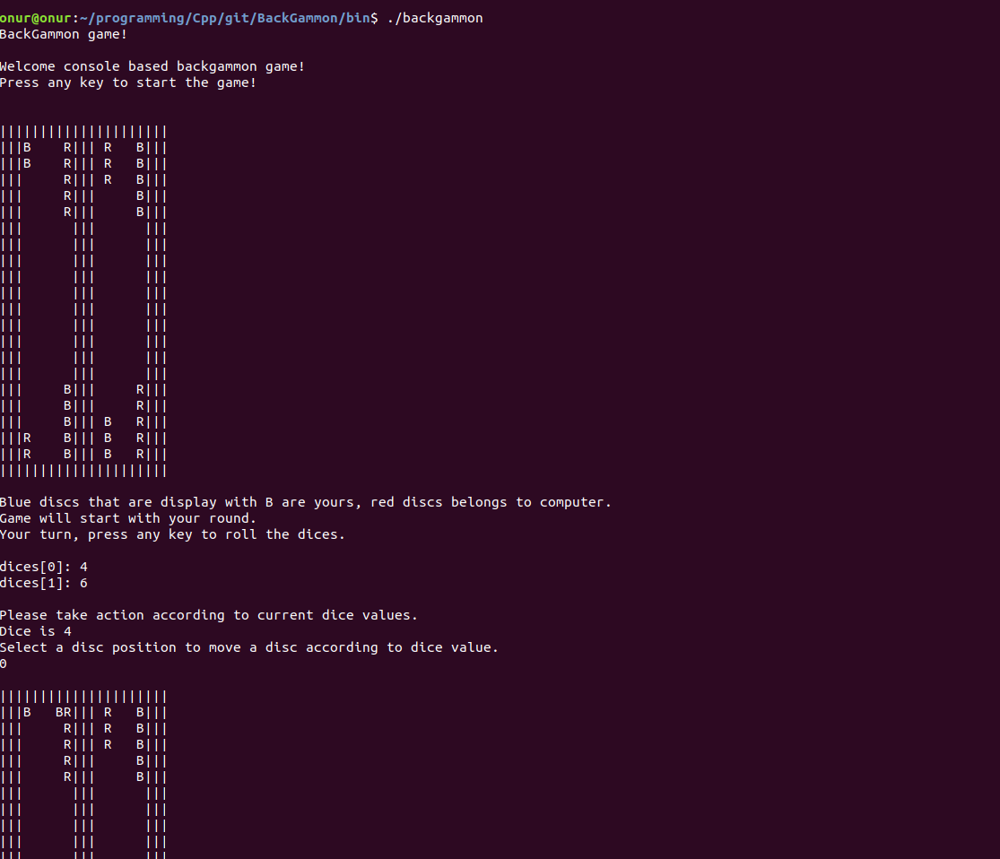
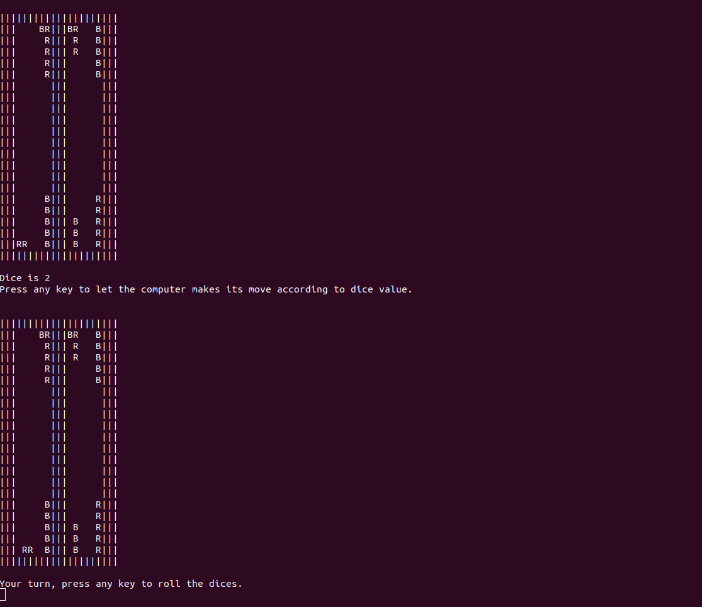
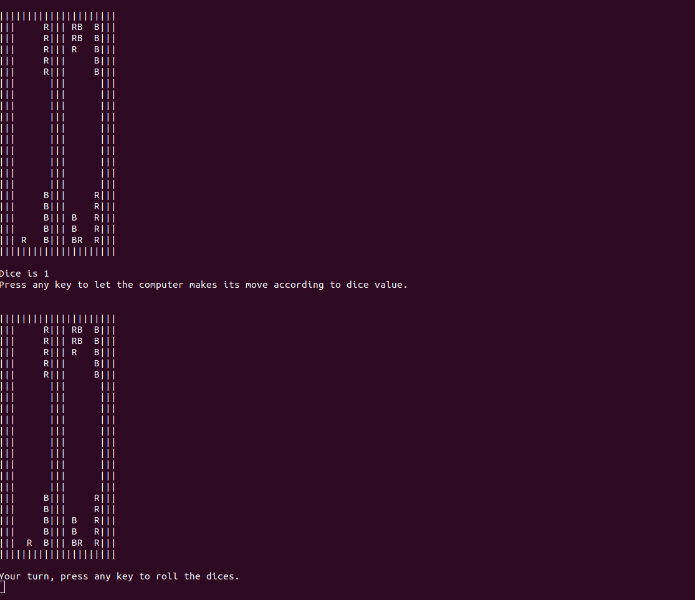
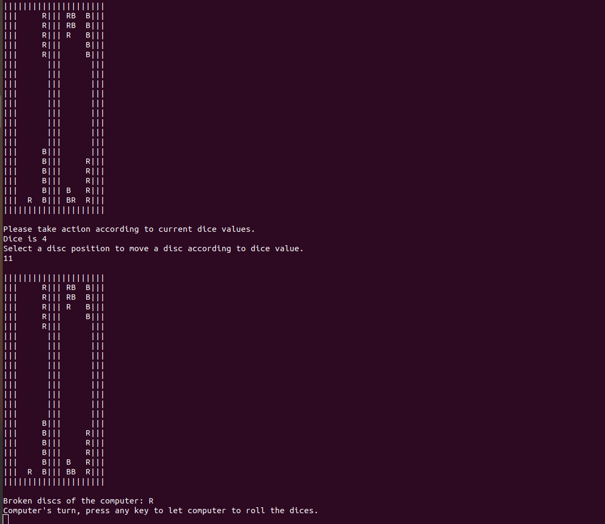
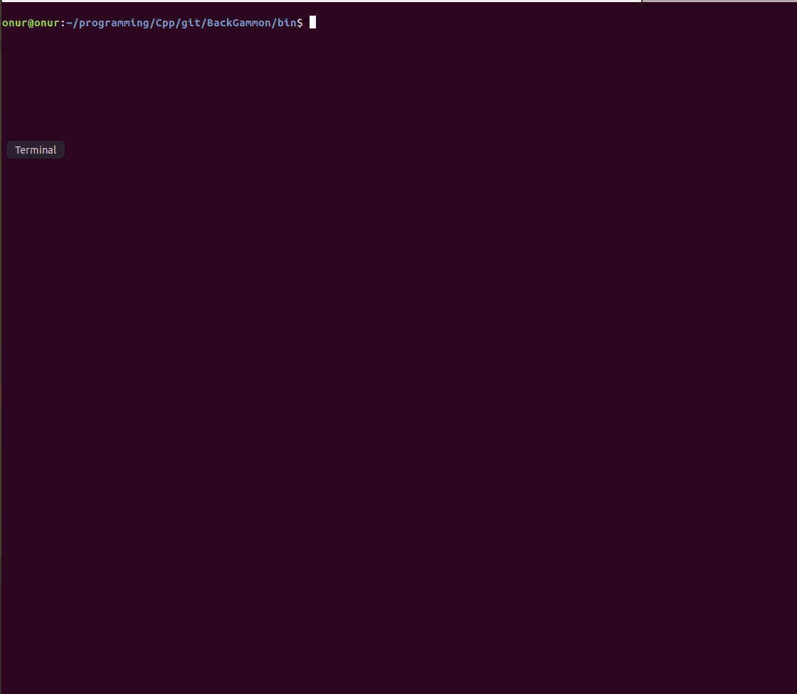

Back gammon is a console based game that I developed using C++ upon an object oriented concept.
The game mode is single player and you will play againts the computer. To make following the gameplay easier, at each step, game is stopped and not proceed until you press a key. Therefore you need to press a key for the actions to be taken like rolling the dices, letting computer to roll dices and making its moves etc. At each step, several instructions will be displayed and following those will be enough to play the game.





The game is not completed yet and I will add the missing features later. For example, disc collection phase will be added and computer's smart disc movements will be improved.